BlocksBlocks for quasi-static polyphase systems |
|
Package Contents
|
Creates symmetrical components from signals representing quasi-static phasors |
|
|
Creates quasi-static phasors from symmetrical components |
|
|  |
Extends complex phase signal to complex polyphase signals using symmetricOrientation |
|
Conversion: m phase -> space phasor |
|
|
Conversion: space phasor -> m phase |